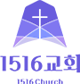
오카야마 리버사이드 교회
비전트립 가이드북
“내게 줄로 재어 준 구역은 아름다운 곳에 있음이여 나의 기업이 실로 아름답도다.”
“The boundary lines have fallen for me in pleasant places; surely I have a delightful inheritance.” 시편 16:6
00
일정 요약
한눈에 보기
| 항목 | 내용 |
|---|---|
| 기간 | 2026년 11월 13일(금)~16일(월), 3박 4일, 9명 |
| 가는 편 | 11/13(금) 08:45 인천 T2 → 10:30 다카마쓰 · 에어서울 RS0297 |
| 오는 편 | 11/16(월) 16:50 다카마쓰 → 18:35 인천 T2 · 진에어 LJ300 |
| 숙소 | 아파호텔 오카야마에키마에 (조식 포함) · 1 Chome-3-12 Shimoishii, Kita Ward, Okayama |
| 방문 교회 | 리버사이드처치 오카야마교회 · 〒700-0072 岡山市北区万成東町10-26 |
| 현지 이동 | 교회 제공 12~16인승 중형 버스 |
13일 (금) 도착과 첫 만남
13시에 교회에 도착해 예배하고, 저녁에는 트립 인원이 만든 비빔밥으로 62명과 공동 식사를 합니다.
| 시간 | 일정 | 비고 |
|---|---|---|
| 06:00 | 인천공항 T2 집결 | 1팀·2팀·개별 이동 |
| 06:00~ 07:30 | 탑승수속 · QT · 아침식사 | |
| 08:45~ 10:30 | 인천 → 다카마쓰 | 에어서울 RS0297 |
| 11:00~ 11:30 | 공항 점심 | 다카마쓰공항 |
| 11:30~ 13:00 | 교회버스로 오카야마 이동 | 13:00 도착 목표 |
| 13:00~ | 교회 도착 및 예배 | |
| 예배 후 | 호텔 이동·짐 보관 | 시간 여유가 있을 때만 |
| ~16:30 | 청소년 생활관 방문 | |
| 16:30~ | 장보기 & 선물 포장 | 장보기는 교회 근처 이온몰, 선물 포장은 교회 |
| 17:30~ 19:30 | 비빔밥 함께 만들기 | 교회 식당 주방, 리버사이드 성도 나베요리 제공 · 리더 이제헌 형제님 |
| 19:30~ 21:00 | 공동 식사 및 교제 | 62명 (청소년 생활관 학생 20명, 성도 42명) |
| 21:00 | 호텔 복귀 → 나눔·조별 교제 |
14일 (토) 기업탐방과 산업시찰
낮에는 기업탐방과 산업시찰을 하고, 점심은 아구리가든 식당에서 먹습니다.
| 시간 | 일정 | 비고 |
|---|---|---|
| 07:30~ 08:30 | 호텔 조식 | |
| 08:30~ 09:30 | QT | 호텔 식당 |
| 09:30~ 10:00 | 정비와 이동 | 교회 차량 |
| 10:00~ 12:00 | 기업탐방 | 음식물 처리공장, 아구리가든 등 |
| 12:00~ 13:00 | 점심 | 아구리가든 식당 |
| 13:00~ 17:00 | 산업시찰 | |
| 17:00~ 20:00 | 저녁식사 | 1안 규카쿠 오카야마역앞점, 2안 가츠규 산스테점 |
| 20:00~ 21:00 | 주일사역 준비 | |
| 21:00 | 호텔 복귀 → 나눔·조별 교제 (온천) | 호텔 대욕장 玄要の湯, 숙박자 무료 |
15일 (주일) 예배와 특순
10:30 주일예배 특순에서 무언극 「사랑을 나눠요」와 찬양 「주님 다시 오실 때까지」를 합니다.
| 시간 | 일정 | 비고 |
|---|---|---|
| 07:30~ 09:00 | 호텔 조식 · QT | |
| 09:00~ 10:30 | 교회 이동과 예배 준비 | |
| 10:30~ 12:00 | 주일예배 | 특순, 선물 전달 |
| 12:00~ 13:00 | 점심과 교제 | |
| 13:00~ 15:00 | 팀 모임 | |
| 15:00~ 18:00 | 오후예배 | 이준인 목사님 설교 |
| 18:00~ 21:00 | 저녁식사 및 교제 | 리버사이드 형제들과 함께 교제 (식사 및 온천) |
| 21:00 | 호텔 복귀 |
16일 (월) 관광과 귀국
오전에 고라쿠엔을 둘러보고, 13시에 공항으로 출발합니다.
| 시간 | 일정 | 비고 |
|---|---|---|
| 07:30~ 08:30 | 호텔 조식 · QT | |
| 08:30~ 09:20 | 체크아웃·짐 보관, 택시 배정 | |
| 09:20~ 11:00 | 관광 · 티타임 | 고라쿠엔 + 사자나미 찻집 |
| 11:30~ 12:15 | 점심 | 1안 아즈마 스시, 2안 와코 |
| 12:15~ 12:50 | 구매 · 호텔 짐 회수 | |
| 13:00~ 14:30 | 다카마쓰공항 이동 | 교회버스 |
| 14:30~ 16:30 | 수속·출국 | 여유 시 공항에서 이른 저녁 |
| 16:50~ 18:35 | 다카마쓰 → 인천 | 진에어 LJ300 |
자세한 내용은 아래 개요·일정·특순·자료실을 보세요.
01
개요
트립 개요
| 항목 | 내용 |
|---|---|
| 목적 | 선교지 사역을 체험하며 교회와 자신의 삶에 적용할 점을 발견함 |
| 방문 교회 | 일본 오카야마 리버사이드교회 (담임목사 마키) · 교회 홈페이지 |
| 교회 주소 | リバーサイドチャーチ 岡山教会 〒700-0072 岡山市北区万成東町10-26 · ☆ 구글 맵에서 교회 위치 보기 |
| 기간 | 2026년 11월 13일(금) ~ 11월 16일(월), 3박 4일 |
| 프로그램 |
|
| 회비 | 1인 140만 원 |
| 참가 인원 | 총 9명 |
오카야마 소개
오카야마는 일본 서부 주고쿠 지방에 있는 도시로, 복숭아와 청포도(마스카트)가 유명합니다. 도심에는 오카야마 성과 일본 3대 정원 중 하나인 고라쿠엔이 있고, 근처 구라시키에는 옛 상가 거리가 남아 있습니다. 자세한 정보는 오카야마 관광 공식 사이트에서 볼 수 있습니다.
아래 장소는 참고용입니다. 활동으로 확정되면 일정에 반영합니다.
관광과 쇼핑
아래 장소는 검색 결과 기준입니다. 지도에서 정확한 지점·입구·층수를 확인한 뒤 저장합니다.
고라쿠엔 정문
- 11월 일반 운영: 08:00~17:00
- 일반 성인 500엔 (9명 모두 일반 성인이면 4,500엔)
- 전화: +81-86-272-1148 (행사·입구·택시 승하차 위치 확인)
사자나미 찻집
- 정원 안 티타임. 겨울 09:00~16:30, 수요일 부정기 휴무
- 커피 500엔 · 말차 과자 세트 700엔 (정원 입장료 별도)
- 전화: +81-86-272-4147 (11/16 10:30, 9명·30분 이용 가능 여부 문의)
오카야마성과 우조 카페
- 성 09:00~17:30, 일반 성인 500엔
- 카페 천수각 1층 09:00~17:30 (주문 마감 17시)
- 성 대표전화: +81-86-225-2096 (카페 직통번호 미확인. 성 대표에 연결 가능 여부 확인)
산스테 오카야마
- 역 연결 식당·카페·지역 과자 쇼핑. 남관 2층 선물 매장 중심
- 매장별 영업시간이 달라 확인 필요
- 월요일 구매는 15분 배정이므로 품목을 미리 정함
호텔 대욕장 玄要の湯
APA호텔 오카야마에키마에 북관 2층. 광명석 인공온천·노천탕.
- 숙박자 무료. 15:00~다음날 01:00, 06:00~10:00
- 준비: 객실 수건, 필요 세면용품, 룸키
- 숙박 예약서 지점명이 岡山駅前인지 대조하고, 입욕 조건은 프런트에서 확인
- 호텔 전화: 0570-095-011
호노카노유
호텔 바로 옆 도보 시설이 아니어서, 차량 불가·가까운 곳 우선 조건에서는 실행 일정에서 제외합니다. 꼭 가야 하면 도보 거리와 왕복 시간을 따로 확인한 뒤 다시 편성합니다.
- 토요일 성인 900엔, 수건 별도
- 전화: 086-236-1126
맛집
참고용 정보입니다. 아래 요일 구성, 일정, 인원(9~12명 기준)은 이 트립의 확정 일정과 다를 수 있습니다. 참고 환율: 100엔 ≒ 940원 기준이며, 실제 환율에 따라 달라질 수 있습니다. 가격은 메뉴 기준 대략적인 금액입니다.
Shokudo Yamato (식당 야마토)
오카야마에서만 맛볼 수 있는 '데미카츠동'(데미그라스 소스 돈가스 덮밥)의 원조격 식당입니다. 현지인들이 줄 서서 먹는 곳입니다.
- 추천: 데미카츠동 (중 930엔~), 중화소바 (880엔~)
- 가격: 930~1,300엔 (약 8,700~12,200원)
- 단체: 식당이 좁아 12명이 한 번에 들어가기 어렵습니다. 4명씩 3개 조로 나눠 입장하세요.
Ebimeshiya Aoe (에비메시야 아오에)
오카야마의 명물 '에비메시'(새우밥) 전문점입니다. 검은 볶음밥이지만 짜지 않고 고소하며, 카레·케첩·캐러멜 소스 풍미가 납니다. 해산물을 드시지 않아도 부담 없습니다.
- 추천: 에비메시 단품 (900엔~), 에비메시 & 크림 고로케 세트 (1,280엔~)
- 예산: 1,500~2,500엔 (에비메시·양식 기준, 금·토 저녁 예비 후보)
- 전화·당일 영업·예약 조건: 미확인
- 이동: 오카야마역에서 택시로 10~15분. 단체 이동은 택시를 추천합니다.
Azuma Zushi (아즈마 스시)
100년 전통의 가게로, 오카야마 향토 요리 '바라즈시'(해산물과 채소를 밥 위에 뿌린 스시)로 유명합니다. 오카야마역 2층 산스테(Sun Station Terrace) 안에 있어 찾기 쉽습니다.
- 추천: 오카야마 바라즈시 (2,500엔~), 런치 니기리 세트 (1,500엔~)
- 비생선류 선호자는 익힌 새우·장어·계란 초밥 단품 주문이 가능합니다.
- 가격: 2,000~3,500엔 (약 18,800~32,900원)
- 위치: 산스테 2층, 11:00 개점
- 전화: +81-86-227-7337 (9명 예약 가능 여부·메뉴 사전 결정·12:15 퇴점 가능 여부 문의)
- 단체: 점심 피크 전인 11:30 방문을 추천합니다.
Teppan Ku-ya (철판구이 쿠야)
오카야마의 고급 와규 '치야규(Chi-ya Beef)'를 맛볼 수 있는 철판구이 집입니다.
- 추천: 계절 디너 코스 (치야규 스테이크 포함)
- 가격: 인당 6,000~8,500엔 (약 57,000~80,000원)
- 단체: 9~12명은 반드시 사전 전화 예약이 필요합니다.
Cafe Moyau (카페 모야우)
아사히가와 강변 뷰가 좋은 카페입니다.
- 메뉴: 커피 (550엔~), 케이크 세트 (1,000엔~)
- 가격: 약 5,200~9,400원 (메뉴 기준)
Aji no Yayoi (아지노 야요이)
편안하게 식사하고 싶을 때 추천하는 일본 가정식 식당입니다.
- 추천: 정식(Teishoku) 세트 (850~1,100엔)
- 가격: 1,000엔 내외 (약 9,500원)
Okonomimura (오코노미무라)
'오코노미야키 마을' 건물입니다. 히로시마 스타일은 면이 들어갑니다. 건물 안에 여러 가게가 있어 팀원들이 흩어져서 드셔도 됩니다.
- 추천: 고기 & 계란(Niku-tama) 소바 (810~900엔) + 치즈·파 토핑 추가
- 가격: 900~1,500엔 (약 8,500~14,000원)
- 단체: 사라시나(Sarashina) 같은 유명 가게는 좁습니다.
Fukuzushi (후쿠즈시)
자체 식사 1안입니다. 점심에 이용하면 저녁은 가츠규로 정해 중복을 줄입니다.
- 가격: 점심 2,500~4,000엔, 저녁 3,000~5,000엔 (1인 편성 예산, 메뉴 견적 확인 필요)
- 위치: 역 서쪽 도보 약 7분
- 영업: 점심 11:30~14:00 (입점·주문 마감 13:30), 저녁 17:00~21:00 (마감 20:00). 월·일요일 저녁 휴무
- 전화: +81-86-252-2402 (날짜·인원·요리를 정해 사전 예약 권장)
규카쿠 오카야마역앞점 (牛角 岡山駅前店)
고기 무한리필 체인입니다.
- 추천: 규카쿠 코스, 세금 포함 4,158엔 (90분, 마지막 주문 70분). 음료 별도 확인
- 좌석: 74석, 개별실 있음. 같은 구역 단체 착석은 전화로 확인
- 주소: 岡山市北区錦町6-17 アウルスタイル錦町2
- 전화: 086-233-8929
규카츠 교토 가츠규 산스테점 (Katsugyu)
토요일 자체 저녁 후보입니다.
- 가격: 2,000~3,500엔
- 위치: 산스테 남관 1층, 45석
- 영업시간: 11:00~22:00 (주문 마감 21:30)
- 전화: +81-86-201-2080 (9명 예약·분산 착석·제공 시간 문의)
와코 이온몰점 (Wako Aeon Mall)
이온몰 7층 식당가입니다.
- 가격: 1,500~2,500엔 (약 14,100~23,500원)
- 영업시간: 11:00~22:00
- 전화: +81-86-227-7818 (9명 이용·예약·분산 착석·퇴점 목표 문의)
가라후네야 CAFÉ
주문 10분, 교제 30분, 계산 5분을 잡습니다.
- 위치: 산스테 남관 1층
- 영업시간: 11:00~22:00 (라스트 오더 21:00)
- 전화: +81-86-201-2728 (주일 20:45 · 9명 45분 이용, 메뉴별 주문 마감 문의)
- 음료 700~1,000엔, 디저트 포함 1,200~1,800엔 (1인 기준)
스타벅스 이온몰 오카야마 1층점
5층점과 구분해서 찾습니다. 좌석 예약을 전제로 하지 않으며, 만석이면 테이크아웃합니다.
- 영업시간: 10:00~21:00
- 음료 예산: 600~1,000엔
- 전화: +81-86-238-7621
하야시야 제면소 다카마쓰공항점
공항 1층. 소금 붓카케 우동·튀김·어묵류.
- 영업: 08:00~20:00
- 예산: 1,000~1,800엔
- 전화: +81-70-5515-0884 (매장 상세 번호 우선. 공항 종합 연락표의 +81-87-879-0884와 다르므로 매장 번호로 문의)
- 9명 이용·주문 소요시간·품절 여부 확인
사누키 멘교 다카마쓰공항점
공항 2층. 수속 후 보안검색 전에 이용하는 후보입니다. 우동·튀김우동·돈부리 세트.
- 영업: 09:30~19:45
- 예산: 1,200~2,000엔
- 전화: +81-87-814-3412
- 최신 층별 지도와 실제 이용 동선은 현장에서 확인
02
일정
준비모임
| 일 | 월 | 화 | 수 | 목 | 금 | 토 |
|---|---|---|---|---|---|---|
| 24 | ||||||
| 25회비 | 26 | 27 | 28 | 29 | 30 | 3107:30~ |
| 일 | 월 | 화 | 수 | 목 | 금 | 토 |
|---|---|---|---|---|---|---|
| 1 | 2 | 3 | 4 | 518:30~ | 6 | 707:30~ |
| 8 | 9 | 10 | 11 | 1218:30~ | 13 | 14 |
| 15 | 16 | 17 | 18 | 19 | 20 | 21 |
| 22 | 23 | 24 | 25 | 26 | 27 | 28 |
| 29 | 30 |
준비모임비전트립 (11/13–16)전달사항
준비모임 1차
일시: 10/24(토) · 장소: 1516교회 헤이븐
- 여권정보: 10/24(토)까지 입력. 공지사항 댓글 또는 이찬호 형제님께 개별 전달
- 회비: 1인 140만 원, 10/25(일)까지 납입
준비모임 2차
일시: 10/31(토) · 장소: 1516교회 헤이븐
- 특순: 11/15 리버사이드교회 예배에서 스킷 드라마 「사랑을 나눠요」와 찬양 「주님 다시 오실 때까지」 두 가지를 합니다. 특순 보기
- 선물: 작년처럼 올리브영에서 인원수에 맞게 구성합니다. 성인 120명·어린이 30명 예상, 여분 추가. 대형 포장으로 화물 이동 후 첫날 자유시간에 개별 포장합니다. 선물 준비 보기 (3차 모임에서 예수님 미니어처 및 과자로 변경)
- 선물 비용: 작년과 비슷하게 120만 원 선. 재정 집행 결정사항은 목요일 모임에서 회계 이민섭 형제님과 논의합니다.
- 금요일(13일): 청소년 생활관 학생들과 저녁(라멘)을 함께 만들어 먹으며 교제. 참여 가능 인원 62명, 주방은 17:30 이후 사용 가능(11/5 확인). (4차 모임에서 비빔밥으로 확정)
- 토요일(14일): 아구리가든 시찰 후 그곳 식당에서 점심 예정. 저녁 액티비티로 함께 온천욕 제안이 있으며 현지에서 유연하게 진행합니다.
- 버스: 12~16인용 중형 버스 제공. 비용 지급은 다시 전달받기로 했고, 목요일 모임에서 정리합니다.
- 향후 모임 및 현지 모임: 앞으로의 준비모임과 일본 현지 모임 모두 짧게라도 예배를 드린 뒤 모임을 갖습니다. 일본어 독음이 가능한 찬양 악보 준비 요청.
다음 모임 11/5(목) 18:30: 스킷 드라마 역할 분담·준비, 선물 비용 집행, 버스 비용 정리.
준비모임 3차
준비모임 4차
일시: 11/7(토) 07:30 · 장소: 요셉홀 및 이제헌 형제님 회사 회의실
- 13일 인천공항 집결 (06:00, 제2터미널)
- 1팀: 05:00 교회 집결, 이제헌 형제님 차로 4명 — 조남준, 이제헌, 강병도, 이선기 형제님
- 2팀: 조영근 형제님이 픽업 — 이준인 목사님, 이찬호 형제님
- 개별 이동: 이민섭 형제님, 이규현 형제님
- 금요일(13일) 저녁: 이제헌 형제님 리더, 메뉴는 비빔밥으로 확정
- 특순: 연습 2회 진행. 소품은 교회 트렁크로 이동. 건달 의상은 이제헌 형제님 구매. 악보 출력은 조영근 형제님. 소품 보기
- 선물: 11/12(목) 목사님께 전달, 교회 트렁크로 이동. 스티커 제작은 조영근 형제님. 선물 준비 보기
- 기도: 조영근 형제님이 모든 형제님이 차례대로 기도하실 수 있도록 순서를 진행
일정
"확인 필요"로 표시된 항목은 아직 확정되지 않았습니다. 날짜를 누르면 접거나 펼칠 수 있습니다.
13일 (금)
| 시간 | 프로그램 | 장소 / 비고 |
|---|---|---|
| 06:00 | 제2터미널 집결 | 1팀: 05:00 교회 집결, 이제헌 형제님 차로 이동 (조남준·이제헌·강병도·이선기 형제님) 2팀: 조영근 형제님 픽업 (이준인 목사님, 이찬호 형제님) 개별: 이민섭 형제님, 이규현 형제님 |
| 06:00~ 07:30 | 탑승수속 & QT & 아침식사 | |
| 08:45~ 10:30 | 인천공항 - 다카마쓰 이동 | 에어서울 RS0297 |
| 10:30~ 11:00 | 입국 및 짐 찾기 | 교회버스 픽업 장소 확인 필요 |
| 11:00~ 11:30 | 공항 점심 | 다카마쓰공항 ☆ 지도 · 후보: 하야시야 제면소(1층), 사누키 멘교(2층) |
| 11:30~ 13:00 | 교회버스로 다카마쓰공항 → 오카야마 이동 | 약 1시간 30분 예상 · 13:00 교회·청소년 생활관 도착 목표 |
| 13:00~ | 교회 도착 및 예배 | 예배 종료 시간 유동적 |
| 예배 후 | 호텔 이동·짐 보관 (여유 시) | 시간 여유가 있을 때만 진행 |
| ~16:30 | 청소년 생활관 방문 | 시간 유동적 |
| 16:30~ | 장보기 & 선물 포장 | 장보기: 교회 근처 이온몰 ☆ 지도 (비빔밥 재료, 대형 하트 재료) 선물 포장: 교회에서 장보기 팀과 선물 포장 팀으로 나눌지는 시간에 따라 유동적으로 정함 |
| 장보기 후 | 교회 식당 이동 및 준비 | 시간 유동적 · 주방은 17:30부터 사용 가능 |
| 17:30~ 19:30 | 비빔밥 함께 만들기 | 교회 식당 주방에서 트립 인원(9명)이 준비 · 리버사이드 성도 나베요리 제공 · 리더: 이제헌 형제님 (17:30부터 사용 가능) |
| 19:30~ 21:00 | 공동 식사 및 교제 | 교회 식당 · 62명(청소년 생활관 학생 20명, 성도 42명)과 저녁식사 및 교제 |
| 21:00 | 호텔 복귀 | |
| 복귀 후 | 나눔 / 조별 교제 | 시간 유동적 |
| 교회 식당 저녁 교제 (비빔밥): 참여 인원 62명(청소년 생활관 학생 20명, 성도 42명). 비빔밥은 트립 인원이 함께 만들고, 리버사이드 성도들이 나베요리를 제공합니다. 리더는 이제헌 형제님. 주방은 13일(금)과 14일(토) 모두 17:30 이후 사용 가능합니다. | ||
14일 (토)
| 시간 | 프로그램 | 장소 / 비고 |
|---|---|---|
| 07:30~ 08:30 | 호텔 조식 | 호텔 식당 · 조식 포함, 필요한 식사 취향 확인 |
| 08:30~ 09:30 | QT | 호텔 식당 · 작년처럼 소그룹 테이블 진행 참고, 호텔 이용 허용 범위 확인 |
| 09:30~ 10:00 | 정비와 기업 이동 | 교회 차량 집결 장소 공유 |
| 10:00~ 12:00 | 기업탐방 (음식물 처리공장, 아구리가든 ☆ 지도 등) | 올해 방문처·순서 확인 |
| 12:00~ 13:00 | 점심식사 | 아구리가든 식당 ☆ 지도 |
| 13:00~ 17:00 | 산업시찰 | 기존 시간 유지, 관광·쇼핑은 임의로 추가하지 않음 |
| 17:00~ 20:00 | 저녁식사 | 1안 규카쿠 오카야마역앞점 (고기 무한리필, 90분) · 2안 가츠규 산스테점 · 단체 착석은 전화로 확인 |
| 20:00~ 21:00 | 주일사역 준비 | 장소 확인 필요 |
| 21:00 | 호텔 복귀 → 나눔 / 조별 교제 (온천에서) | 1안 호텔 대욕장 玄要の湯 (숙박자 무료, 다음날 01:00까지) · 2안 호노카노유는 참고만 (차량 이동이 필요해 실행 일정에서 제외) |
| 식사: 점심은 아구리가든 식당(확정). 저녁은 1안 규카쿠 오카야마역앞점, 2안 가츠규 산스테점. 관광·카페 예비안: 1안은 기업·아구리가든 ☆ 지도 안내 구역을 현지 프로그램 안에서 둘러보는 것입니다. 2안은 산업시찰이 일찍 끝나 역 서쪽으로 돌아오는 경우 호칸초 상점가 ☆ 지도를 20~30분 걷는 코스로, 이동을 제외하고 40분 이상 여유가 있을 때만 적용합니다. 카페는 현지 휴식시간이 1안이고, 역 주변 자유시간이 있을 때만 가라후네야 ☆ 지도를 2안으로 씁니다. 쇼핑은 산스테 ☆ 지도의 간식·기념품이 1안, 돈키호테 역앞점 ☆ 지도은 개인 자유시간이 있을 때의 2안입니다. | ||
15일 (주일)
| 시간 | 프로그램 | 장소 / 비고 |
|---|---|---|
| 07:30~ 08:30 | 호텔 조식 | 호텔 식당 · 조식 포함 |
| 08:30~ 09:00 | QT | 호텔 식당 |
| 09:00~ 09:45 | 정비와 출발 | 교회 출발 |
| 09:45~ 10:30 | 교회 이동과 예배 준비 | 현지 교회 안내에 따름 |
| 10:30~ 12:00 | 주일예배 | 특순, 선물 전달 |
| 12:00~ 13:00 | 점심과 교제 | 교회 제공 시 이용. 자체 식사 1안 아즈마 스시, 2안 와코. 오후 복귀 동선 확인 |
| 13:00~ 15:00 | 팀 모임 | 가이드북상 확인 필요 |
| 15:00~ 18:00 | 오후예배 | 이준인 목사님 설교 |
| 18:00~ 21:00 | 저녁식사 및 교제 | 리버사이드 형제들과 함께 교제 (식사 및 온천) |
| 21:00 | 호텔 복귀 | |
| 변경: 주일 저녁은 리버사이드 형제들과 함께하는 식사·온천 교제로 정해져, 이전에 세운 와코·가츠규 저녁, 니시가와 산책(땅밟기), 가라후네야 카페, 22시 전체 나눔 계획은 쓰지 않습니다. | ||
16일 (월)
| 시간 | 프로그램 | 장소 / 비고 |
|---|---|---|
| 07:30~ 08:00 | 호텔 조식 | 호텔 식당 · 조식 30분 |
| 08:00~ 08:30 | QT | 호텔 식당 · QT 30분 |
| 08:30~ 09:10 | 체크아웃·짐 보관 | |
| 09:10~ 09:20 | 택시 탑승과 인원 배정 | |
| 09:20~ 09:50 | 고라쿠엔 ☆ 지도 정문 이동·입장 준비 | 2안: 오카야마성 ☆ 지도 이동·입장 준비 |
| 09:50~ 10:30 | 고라쿠엔 ☆ 지도 정문 입장 후 연못·잔디·성 방향 경관 짧게 관람 | 상세 도보 경로와 택시 재탑승 지점은 현장 안내도로 확정. 2안: 오카야마성 ☆ 지도 내부 관람 40분 제한 |
| 10:30~ 11:00 | 사자나미 찻집 ☆ 지도 티타임 (11월 09:00~16:30) | 커피 500엔·말차 과자 세트 700엔. 9명 30분 이용 가능 여부 먼저 문의. 2안: 우조 카페 ☆ 지도 |
| 11:00~ 11:30 | 출구 이동·택시로 역 복귀 | 2안: 택시로 이온몰 이동 |
| 11:30~ 12:15 | 점심 | 1안 아즈마 스시, 2안 와코 이온몰점 |
| 12:15~ 12:30 | 구매 시간 | 1안 산스테 ☆ 지도 지역 과자, 2안 이온몰 필요한 구매 |
| 12:30~ 12:50 | 호텔 이동·짐 회수 | 교회버스 |
| 12:50~ 13:00 | 공항 차량 탑승 | |
| 13:00~ 14:30 | 다카마쓰공항 ☆ 지도 이동 예정 | 실제 소요시간 확인 필요 |
| 14:30~ 16:30 | 수속 후 이른 저녁과 출국 | 15:00~15:30 가능 시 공항 1안 하야시야 ☆ 지도, 2안 사누키 멘교 ☆ 지도. 수속·보안검색 우선 |
| 16:50~ 18:35 | 다카마쓰 - 인천 이동 | 진에어 LJ300 |
| 월요일 관광 선택 기준: 1안은 고라쿠엔 ☆ 지도과 사자나미 찻집 ☆ 지도, 2안은 오카야마성 ☆ 지도과 우조 카페 ☆ 지도 중 하나를 고릅니다. 13시 출발과 14시 30분 공항 도착은 가이드북 배치이며, 실제 차량 이동시간은 아직 정해지지 않았습니다. 기사 확인 후 더 이른 출발이 필요하면 관광·카페·쇼핑을 줄입니다. 출발시간을 지키는 변경 순서: 기념품 쇼핑 생략 → 카페 축소·생략 → 관광 단축. 점심 식당이 45분 내 이용을 확인해 주지 않으면 대체 식사로 바꿉니다. 강한 비나 공항 조기 출발이면 관광을 생략하고 역·이온몰의 이른 식사와 구매만 진행합니다. 후쿠다 찻집은 11시 개점이라 이번 오전 코스에서 제외했습니다. | ||
식사 선택표
모든 점심·저녁에 실제 식당 1안과 2안을 지정했습니다. 현지 제공 식사가 있으면 해당 끼니의 외부 식당은 예비안으로 전환합니다. 미확인 이동을 가능하다고 가정해 예약하지 않습니다. 예산은 1인 기준 편성액이며 확정 메뉴 가격이 아닙니다.
금요일 점심
확정: 다카마쓰공항에서 점심(11:00~11:30)으로 바뀌어 아래 식당은 쓰지 않습니다.
| 구분 | 식당과 메뉴 | 예산과 적용 |
|---|---|---|
| 1안 | 와코 이온몰점 / 돈카츠 정식 | 1,500~2,500엔. 점심·커피·호텔 동선 연결. |
| 2안 | 가츠규 산스테점 / 소고기 규카츠 정식 | 2,000~3,500엔. 역 남관 1층. 선택 시 커피도 역 주변 또는 테이크아웃으로 변경. |
금요일 저녁 (19:30 공동 식사)
확정: 교회 식당에서 트립 인원이 비빔밥을 만들어 19:30에 62명(학생 20명, 성도 42명)과 공동 식사를 합니다. 아래 식당은 쓰지 않습니다.
| 구분 | 식당과 메뉴 | 예산과 적용 |
|---|---|---|
| 1안 | 가츠규 산스테점 / 규카츠 정식 | 2,000~3,500엔. 점심에 이용했다면 저녁은 2안 선택. |
| 2안 | 아즈마 스시 산스테점 / 바라즈시 또는 초밥 | 2,000~3,500엔. 회 비선호·알레르기 대체 메뉴 문의. |
토요일 점심 (12:00~13:00)
확정: 아구리가든 식당에서 점심을 먹습니다. 아래 식당은 쓰지 않습니다.
기업탐방 장소에서 오카야마역 방면 복귀가 가능할 때의 실명 대안입니다. 현지 식사 포함 시 이용하지 않습니다. 방문지 주소가 확정되면 왕복 이동과 13시 산업시찰 복귀 가능 여부를 점검합니다.
| 구분 | 식당과 메뉴 | 예산과 적용 |
|---|---|---|
| 1안 | 후쿠즈시 / 향토 바라즈시·치라시 계열 | 2,500~4,000엔. 역 서쪽 호칸초. 11:30 개점, 점심 입점 13:30까지. |
| 2안 | 아즈마 스시 산스테점 / 바라즈시 또는 초밥 | 2,000~3,500엔. 역 안 접근성 중심. |
토요일 저녁 (17:00~20:00)
17시 산업시찰 종료 후 20시 주일사역 준비 전까지 식사·이동이 모두 가능한지 확인합니다. 단체 착석·예약은 전화로 확인합니다.
| 구분 | 식당과 메뉴 | 예산과 적용 |
|---|---|---|
| 1안 | 규카쿠 오카야마역앞점 / 추천 규카쿠 코스 (고기 무한리필) | 세금 포함 4,158엔. 90분, 마지막 주문 70분. 음료 별도. 74석·개별실 있음. |
| 2안 | 가츠규 산스테점 / 소고기 규카츠 정식 | 2,000~3,500엔(편성 예산). 9명 연석·분산 착석·예약 가능 여부 문의. |
주일 점심 (12:00~13:00)
작년처럼 교회 교제 식사가 제공되면 그 식사를 우선합니다. 외부 식사일 때는 13시 팀 모임 복귀 가능 여부 확인이 필수이며, 두 식당이 교회 인근이라고 단정하지 않습니다.
| 구분 | 식당과 메뉴 | 예산과 적용 |
|---|---|---|
| 1안 | 아즈마 스시 산스테점 / 바라즈시·초밥 | 2,000~3,500엔. 교회 식사 미제공 시 자체 식사 후보. |
| 2안 | 와코 이온몰점 / 돈카츠 정식 | 1,500~2,500엔. 생선 비선호 대안. |
주일 저녁 (18:00~21:00)
확정: 리버사이드 형제들과 함께 저녁식사 및 교제(식사 및 온천)를 합니다. 아래 식당은 쓰지 않습니다.
| 구분 | 식당과 메뉴 | 예산과 적용 |
|---|---|---|
| 1안 | 와코 이온몰점 / 돈카츠 정식 | 1,500~2,500엔. 식사 후 니시가와 산책 연결. |
| 2안 | 가츠규 산스테점 / 규카츠 정식 | 2,000~3,500엔. 역에서 카페·호텔 복귀 연결. |
월요일 점심 (11:30~12:15)
45분 내 식사·계산 가능 여부를 사전에 문의합니다. 대기가 10분을 넘으면 현장에서 다른 맛집을 찾지 않고, 선택한 대안이나 사전 확보한 간단한 식사로 바꿉니다.
| 구분 | 식당과 메뉴 | 예산과 적용 |
|---|---|---|
| 1안 | 아즈마 스시 산스테점 / 바라즈시·초밥 | 2,000~3,500엔. 고라쿠엔 코스와 연결. |
| 2안 | 와코 이온몰점 / 돈카츠 정식 | 1,500~2,500엔. 성 코스·생선 비선호 대안. |
월요일 저녁 대체용 공항 이른 식사
16:50 출발·18:35 인천 도착이라 일본에서 통상적인 저녁 식사는 어렵습니다. 아래 두 곳은 15:00~15:30 전후의 이른 저녁 또는 간식 후보입니다. 11:30 점심과 가까우므로 팀 선택사항이며, 항공 수속 완료와 보안검색·탑승 여유가 확인될 때만 이용합니다. 기내식 제공은 가정하지 않습니다. 귀국 후 저녁은 팀 해산·귀가 동선에 맞춰 따로 정합니다.
| 구분 | 식당과 메뉴 | 예산과 적용 |
|---|---|---|
| 1안 | 하야시야 제면소 다카마쓰공항점 / 소금 붓카케 우동·튀김 | 1,000~1,800엔. 공항 1층, 08:00~20:00. |
| 2안 | 사누키 멘교 다카마쓰공항점 / 우동·돈부리 세트 | 1,200~2,000엔. 공항 2층, 09:30~19:45. |
공항 식사 운영 기준: 공항 도착 지연·수속 대기·보안검색 혼잡 시 식사부터 생략합니다. 15:00~15:30 식사는 항공사의 절차와 탑승시간보다 우선하지 않습니다. 국제선 출국심사 이후 해당 매장에 다시 갈 수 있다고 가정하지 않습니다.
교통과 숙소
항공편 (인천 - 다카마쓰): 가는 편은 에어서울 RS0297(인천공항 T2 → 다카마쓰공항 T1), 오는 편은 진에어 LJ300(다카마쓰공항 T1 → 인천공항 T2)입니다. 위탁수화물 각 15kg.
| 구분 | 날짜 | 출발 | 도착 | 소요 |
|---|---|---|---|---|
| 출발 (인천 - 다카마쓰) | 11/13(금) | 08:45 | 10:30 | 105분 |
| 리턴 (다카마쓰 - 인천) | 11/16(월) | 16:50 | 18:35 | 105분 |
- 현지 이동: 리버사이드교회에서 12~16인용 중형 버스를 제공합니다(10/31 모임 전달). 비용 지급은 다시 전달받기로 했고 11/5 모임에서 정리합니다. 교회 차량으로 이동합니다. 가는 날 다카마쓰공항에서 픽업하고, 오는 날 숙소에서 공항까지 이동합니다. 세부 시간은 확인 필요. 작년에는 교회가 버스, 운전자, 인솔자를 4일간 준비해 주셨고 비용은 약 20.3만 엔(약 185만 원)이었습니다.
- 숙소: 아파호텔 오카야마에키마에 (APA HOTEL OKAYAMA-EKIMAE) 공식 홈페이지. 교회에서 버스로 15분. 예약 완료: 11/13(금) ~ 11/16(월), 조식 포함.
- 주소: 1 Chome-3-12 Shimoishii, Kita Ward, Okayama
- 전화: +81 86-236-3111
03
특순
특순
무언극: 사랑을 나눠요 (2025 여름 오이타 아웃리치 공연을 바탕으로 한 2026 팀 버전) · 감독: 이민섭 형제님
-
대본
대본 펼쳐 보기
캐스팅
- 예수님 : 이민섭 형제님
- 주인공1 (선) : 이찬호 형제님
- 주인공2 (악) : 조남준 형제님
- 사탄 : 이준인 목사님
- 노인 : 강병도 형제님
- 어린이 : 조영근 형제님
- 환자 (깁스) : 이규현 형제님
- 건달1 : 이선기 형제님
- 건달2 : 이제헌 형제님
소품: 정해지는 대로 추가합니다 (TBD).
큐시트
시간 내용 예수님 · 주인공1 · 주인공2 0:05 예수님 입장, 인사 및 착석 0:10 주인공1 & 주인공2 입장 및 예수님과 인사 0:20 예수님 큰 하트(4) 주인공2 전달 → 주인공2 신나서 표현 0:30 예수님 작은 하트(1) 꺼내서 주인공1 전달 (주인공2 큰 하트 크기 자랑) 사탄 0:40 주인공1 퇴장 후 사탄 등장 (사탄 지속적으로 주인공2 방해) 노인 0:50 노인 지팡이 짚으며 등장 1:00 노인 주인공2에게 하트 달라고 요구 & 주인공2 거절 1:00 노인 퇴장 & 예수님 주인공2 부름 1:10 예수님 하트(3) 회수 후 더 작은 하트(2) 보여준 뒤 주인공2 전달 어린이 1:20 어린이 떼쓰고 울면서 등장 1:30 어린이 주인공2에게 하트 요구 & 주인공2 거절 1:40 어린이 퇴장 & 예수님 주인공2 부름 1:50 예수님 하트(3) 회수 후 더 작은 하트(2) 보여준 뒤 주인공2 전달 환자 2:00 환자 고통(깁스) 표현하면서 등장 2:10 환자 주인공2에게 하트 요구 & 주인공2 거절 2:20 환자 퇴장 & 예수님 주인공2 부름 2:30 예수님 하트(2) 회수 후 더 작은 하트(1) 보여준 뒤 주인공2 전달 건달 2:40 건달1 & 건달2 밀치고 싸우면서 등장 2:50 건달1 & 건달2 주인공2에게 하트 요구 & 주인공2 거절 3:00 건달1 & 건달2 퇴장 & 예수님 주인공2 부름 3:10 예수님 하트 회수 후 손가락으로 하트 만들어서 주인공2 전달 3:15 주인공2 하트 사라져 엉엉 울면서 퇴장 3:20 사탄 기뻐하면서 이어서 퇴장 주인공1 3:30 주인공1 등장 & 무대 이동하며 하트 보여주며 표현 노인 3:40 노인 지팡이 짚으며 등장 & 주인공1에게 하트(1) 요구 3:50 주인공1 하트 전달 & 노인 하트 받고 일어서서 지팡이 부수고 하트 들고 퇴장 4:00 예수님 주인공1 불러서 더 큰 하트(2) 전달 어린이 4:10 어린이 떼쓰고 울면서 등장 & 주인공1에게 하트(2) 요구 4:20 주인공1 어린이 안아주며 하트(2) 어린이에게 전달 4:30 하트 받은 어린이 주인공1과 하이파이브 후 퇴장 4:40 예수님 주인공1 불러 하이파이브 후 새로운 하트(3) 줌 환자 4:05 환자 아파하며 등장 & 주인공1에게 하트(3) 요구 4:10 환자 깁스 풀어헤치며 하트 머리 위로 흔들고 퇴장 4:20 예수님 주인공1 불러서 더 큰 하트(4) 전달 건달 4:30 건달1 & 건달2 싸우면서 등장 & 주인공1에게 하트(4) 요구 4:40 주인공1 건달1 & 건달2 발견 후 둘 사이에 하트를 주며 셋이 어깨동무 4:50 예수님 주인공1 불러 칭찬하며 더 큰 하트(5) 주인공1 전달 주인공2 6:30 주인공2 울면서 등장 & 큰 하트 든 주인공1 보며 하트 달라고 요구함 6:40 주인공1 주인공2에게 하트 전달 & 주인공2 퇴장 6:50 예수님과 주인공1 하이파이브 후 대형 하트(6) 주인공1에게 전달 7:00 주인공1 혼자 대형 하트 들다가 무거워 다른 친구들 부름 모두 7:10 전부 나와서 하트 들기 2회 시도 (1, 2, 3 일본어로 카운트) 7:20 예수님 나와서 함께 하나 둘 셋 외친 후 하트를 번쩍 들며 마무리 - 참고 영상: 유튜브 참고 영상 보기
찬양: 주님 다시 오실 때까지
- 1절은 한국팀이 한국어로, 2절은 일본어로 부릅니다.
- 후렴은 리버사이드 교우들과 함께 부릅니다.
- 시작할 때나 중간에 나레이션 또는 인사말을 넣을 수 있습니다.
- 한국어 찬양 참고 영상: 유튜브에서 보기
- 일본어 찬양 참고 영상: 유튜브에서 보기
- 일본어 가사 악보 (C키): 일본어 원문, 가나 독음, 한글 발음 포함
가사 보기 (한국어 · 일본어 · 한글 발음)
1절
주님 다시 오실 때까지 나는 이 길을 가리라
主が来られる日まで この道を歩む
슈가 코라레루 히마데 코노 미치오 아유무
좁은 문 좁은 길 나의 십자가 지고
せまき道を 十字架をせおい
세마키 미치오 쥬지가오 세오이
나의 가는 이 길 끝에서 나는 주님을 보리라
その道のはてに立ち 主を見上げるとき
소노 미치노 하테니 타치 슈오 미아게루 토키
영광의 내 주님 나를 맞아주시리
栄光の主よ 受け入れたまえ
에이코오노 슈요우 우케이레타마에
후렴
주님 다시 오실 때까지 나는 일어나 달려가리라
主が来られる日まで 立ち上がり走り行く
슈가 코라레루 히마데 타치아가리 하시리유쿠
주의 영광 온 땅 덮을 때 나는 일어나 노래하리
主の栄光みちあふれ 立ち上がり賛美する
슈노 에이코오 미치아후레 타치아가리 산비스루
내 사모하는 주님 온 세상 구주시라
メシアなるイエスよ われはまちのぞむ
메시아나루 이에스요 와레와 마치노조무
내 사모하는 주님 영광의 왕이시라
栄光の王主よ われはしたがう
에이코오노 오오슈요 와레와 시타가우
일본어는 보내 주신 영상 버전이며, 공식 번역으로 따로 확인한 문안은 아닙니다.
악보 바로 보기
크게 보기를 누르면 옆으로 밀어서 볼 수 있습니다. 악보 줄을 누르면 새 창에서 확대해 볼 수 있습니다.
1절
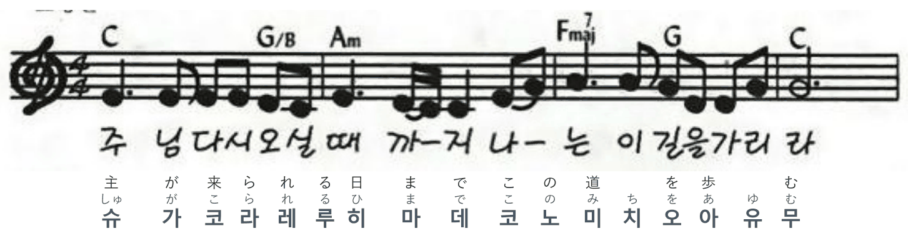
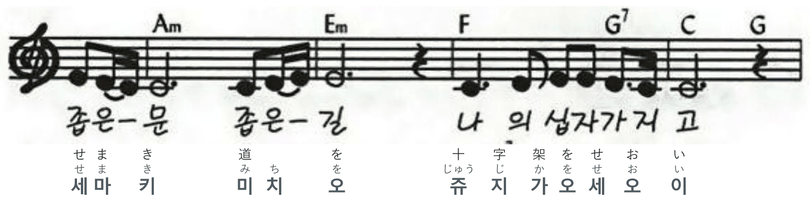
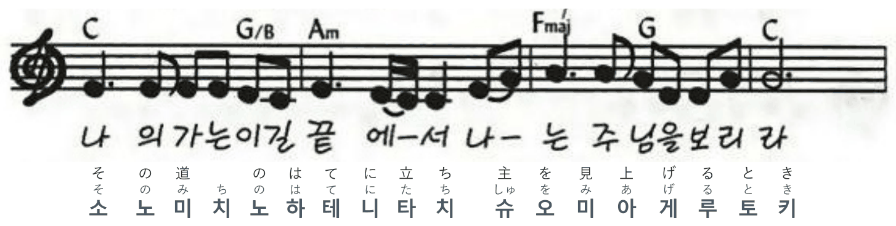
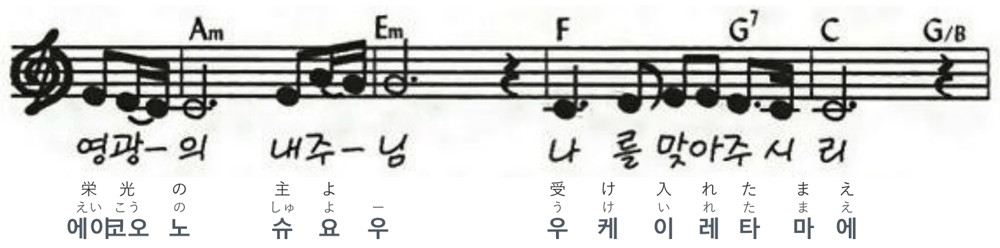
후렴
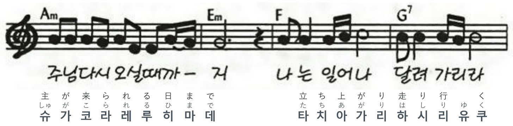
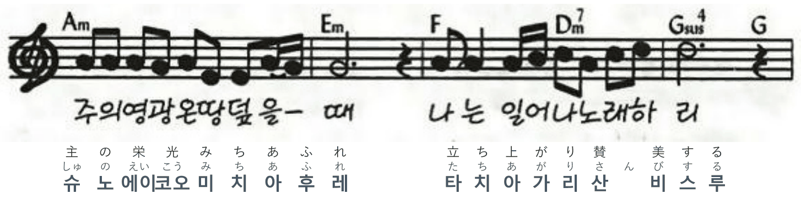
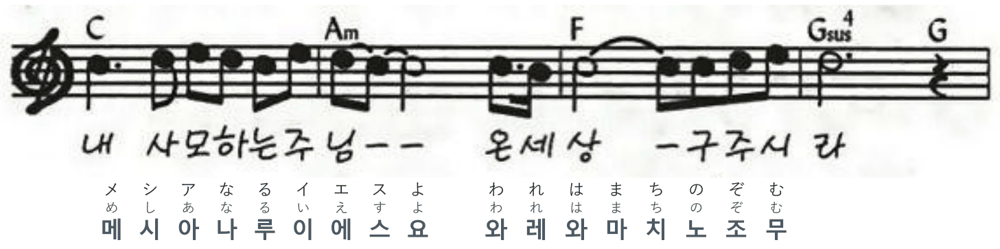
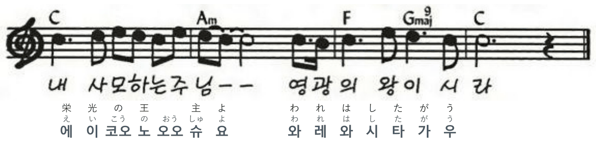
PDF 원본: 내려받기·인쇄용 PDF 열기
일본어 찬양
- 참고 영상: 유튜브 참고 영상 보기
-
더 원합니다: 악보 바로 보기
5~12마디를 한 번 반복한 뒤 2번 엔딩(13마디)으로 넘어갑니다. 악보 줄을 누르면 새 창에서 확대해 볼 수 있습니다.
-
예수 우리들의 밝은 빛: 악보 바로 보기
악보 줄을 누르면 새 창에서 확대해 볼 수 있습니다.
-
예수 사랑하심은 (합동찬송가 411장 · 日 「主われを愛す」): 가사 바로 보기
1절
예수 사랑하심은 거룩하신 말일세
主われを愛す 主は強ければ
슈 와레오 아이스 슈와 츠요케레바
우리들은 약하나 예수 권세 많도다
われ弱くとも 恐れはあらじ
와레 요와쿠토모 오소레와 아라지
후렴
날 사랑하심 날 사랑하심
わが主イエス わが主イエス
와가 슈 이에스 와가 슈 이에스
날 사랑하심 성경에 써 있네
わが主イエス われを愛す
와가 슈 이에스 와레오 아이스
2절
나를 사랑하시고 나의 죄를 다 씻어
わが罪のため 栄えを捨てて
와가 츠미노 타메 사카에오 스테테
하늘 문을 여시고 들어가게 하시네
天より降り 十字架につけり
아메요리 쿠다리 주지가니 츠케리
후렴
날 사랑하심 날 사랑하심
わが主イエス わが主イエス
와가 슈 이에스 와가 슈 이에스
날 사랑하심 성경에 써 있네
わが主イエス われを愛す
와가 슈 이에스 와레오 아이스
3절
내가 연약할수록 더욱 귀히 여기사
御国の門を 開きてわれを
미쿠니노 카도오 히라키테 와레오
높은 보좌 위에서 낮은 나를 보시네
招き給えり 勇みて昇らん
마네키 타마에리 이사미테 노보란
후렴
날 사랑하심 날 사랑하심
わが主イエス わが主イエス
와가 슈 이에스 와가 슈 이에스
날 사랑하심 성경에 써 있네
わが主イエス われを愛す
와가 슈 이에스 와레오 아이스
4절
세상 사는 동안에 나와 함께 하시고
わが君イエスよ われをきよめて
와가 키미 이에스요 와레오 키요메테
세상 떠나가는 날 천국 가게 하소서
良き働きを なさしめ給え
요키 하타라키오 나사시메 타마에
후렴
날 사랑하심 날 사랑하심
わが主イエス わが主イエス
와가 슈 이에스 와가 슈 이에스
날 사랑하심 성경에 써 있네
わが主イエス われを愛す
와가 슈 이에스 와레오 아이스
-
주님만이 모든 것 (日 「あなたがすべて」): 악보 바로 보기 · 참고 영상 ↗
악보 줄마다 일본어 가사와 그 밑에 한글 발음을 붙였습니다. "띄어쓰기 수정"을 누르면 각 악보 줄 밑의 한글 발음을 그 자리에서 바로 고칠 수 있습니다. 발음 사이에 띄어쓰기를 넣거나 빼면 위의 일본어도 함께 움직입니다. 줄 맨 앞에서 백스페이스를 누르면 그 줄이 윗줄로 올라가고, 엔터를 누르면 아랫줄로 내려갑니다. "우루와"처럼 한 글자의 발음 사이도 음표에 맞춰 띄어 쓸 수 있습니다. 발음 글자는 바뀌지 않습니다. 다 고친 뒤 "저장"을 누르면 그 상태가 최종이 되어 모두에게 같은 띄어쓰기로 보입니다. "되돌리기"는 마지막으로 저장한 상태로 돌아갑니다.
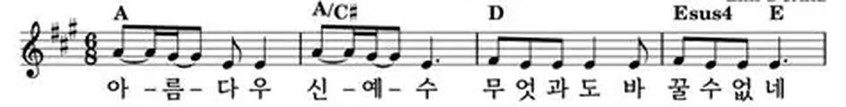
麗 し い イエ ス 何に も 変 え ら れ な い
우루와시이 이에스 나니니모 카에라레나이
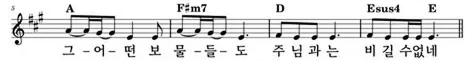
ど ん な 宝 も あなたに 及 ば ない
도온나 타카라모 아나타니 오요바나이
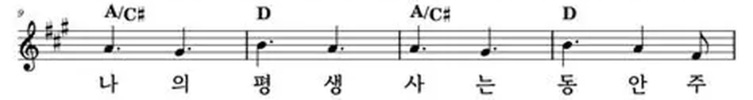
命 の か ぎ り あ
이노치노 카기리 아
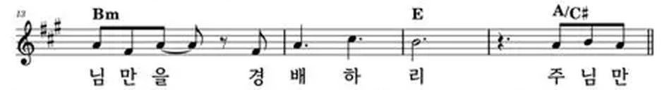
な た を 崇 め る あなた
나타오 아가메루 아나타
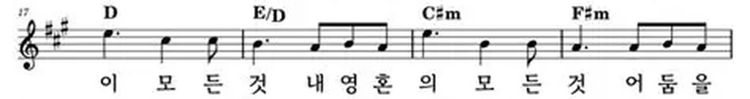
が す べ て わ た し の す べ て 闇を
가 스베테 와타시노 스베테 야미오
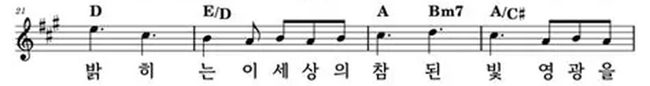
照 ら す 真 の 光 栄光
테라스 마코토노 히카리 에이코오
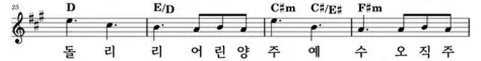
あ れ 子羊 イエス あなた
아레 코히츠지 이에스 아나타
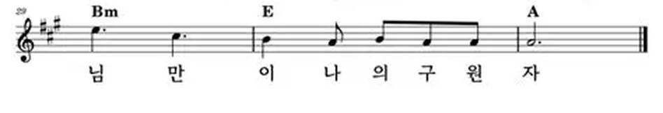
だけが 救 い 主
다케가 스쿠이누시
-
주께서 곁에 계시기에 (日 「主がそばにいるから」): 가사 바로 보기 · 참고 영상 ↗
부드런 주의 사랑의 손 내 눈물 닦으시네
主は御手を伸ばして 涙をぬぐい
슈와 미테오 노바시테 나미다오 누구이
깊은 수렁에서 나를 붙들어 건지시고
つまずきから 引き上げてくださる
츠마즈키카라 히키아게테 쿠다사루
영원한 생명 길로 이끄시네
命の地へ 導く
이노치노 치에 미치비쿠
할렐루야 주를 더욱 사랑
ハレルヤ 主を愛して
하레루야 슈오 아이시테
내 평생 살 동안 주만 찬양하리
歌は絶えず 感謝ささげ
우타와 타에즈 칸샤 사사게
고난이 찾아올 때에도 난 감사하리
苦しい時さえ 賛美をする
쿠루시이 토키사에 산비오 스루
주가 내 곁에 계시니까
主がそばにいるから
슈가 소바니 이루카라
04
자료실
자료실
자료 업로드와 의견 남기기는 이 페이지만으로는 할 수 없습니다. 아래 도구를 함께 쓰세요.
- 사진과 영상 업로드: 구글 드라이브 자료실 열기
- 비전트립 수기 쓰기: 비전트립 수기 문서 열기
- 의견과 질문 남기기: 의견과 질문 폼 열기
QT 블레싱
14~16일 아침 QT는 3명씩 3개 조로 나눕니다. 날마다 조를 바꾸고, 같은 사람과 두 번 같은 조가 되지 않도록 짰습니다. 굵은 글씨가 그날 그 조의 리더이며, 9명이 사흘 동안 한 번씩 돌아가며 맡습니다. 말씀은 생명의 삶 본문입니다. 주제와 나눔 질문은 본문에 맞춘 초안이니 블레싱 담당(강병도 형제님)이 확정해 주세요.
| 날짜 | 1조 | 2조 | 3조 |
|---|---|---|---|
| 14일 (토) | 이준인 목사님, 조남준, 이민섭 | 이찬호, 조영근, 이제헌 | 강병도, 이규현, 이선기 |
| 15일 (주일) | 이준인 목사님, 이찬호, 강병도 | 조남준, 조영근, 이규현 | 이민섭, 이제헌, 이선기 |
| 16일 (월) | 이준인 목사님, 조영근, 이선기 | 조남준, 이제헌, 강병도 | 이민섭, 이찬호, 이규현 |
14일 (토) · 정의를 독으로 바꾸는 자들에게 임하는 심판
시간: 08:30~09:30 · 호텔 식당
- 주제: 정의를 독으로 바꾸는 자들에게 임하는 심판
-
말씀: 아모스 6:8~14 (생명의 삶) · 본문 보기
- 조 편성: 1조 이준인 목사님, 조남준 형제님, 이민섭 형제님 / 2조 이찬호 형제님, 조영근 형제님, 이제헌 형제님 / 3조 강병도 형제님, 이규현 형제님, 이선기 형제님
말씀 나눔
- 하나님이 미워하신 "야곱의 영광(교만)"처럼, 내가 내 힘으로 이룬 것이라 자랑하는 것은 무엇인가요?
- 공의를 쓸개로, 정의를 쑥으로 바꾸는 모습이 내 삶과 일터에 있지는 않나요?
- 오늘 기업탐방에서 공의와 정직으로 일하는 모습을 어디에서 볼 수 있을까요?
15일 (주일) · 심판의 기준, 정의의 다림줄
시간: 07:30~09:00 조식·QT 중 · 호텔 식당
- 주제: 심판의 기준, 정의의 다림줄
-
말씀: 아모스 7:1~9 (생명의 삶) · 본문 보기
- 조 편성: 1조 이준인 목사님, 이찬호 형제님, 강병도 형제님 / 2조 조남준 형제님, 조영근 형제님, 이규현 형제님 / 3조 이민섭 형제님, 이제헌 형제님, 이선기 형제님
말씀 나눔
- 아모스처럼 "주 여호와여 용서하소서" 하고 중보해야 할 사람이나 공동체는 누구인가요?
- 하나님의 다림줄을 내 삶에 대면 어디가 기울어져 있나요?
- 오늘 예배와 특순, 리버사이드교회를 위해 서로 중보해 주세요.
16일 (월) · 참된 왕의 경고를 막는 자에게 임하는 심판
시간: 08:00~08:30 · 호텔 식당
- 주제: 참된 왕의 경고를 막는 자에게 임하는 심판
-
말씀: 아모스 7:10~17 (생명의 삶) · 본문 보기
- 조 편성: 1조 이준인 목사님, 조영근 형제님, 이선기 형제님 / 2조 조남준 형제님, 이제헌 형제님, 강병도 형제님 / 3조 이민섭 형제님, 이찬호 형제님, 이규현 형제님
말씀 나눔
- 아마샤의 반대에도 아모스가 "여호와께서 나를 데려다가" 말씀을 전한 이유는 무엇인가요?
- 목자이자 뽕나무를 재배하던 아모스처럼, 평범한 내 자리에서 받은 부르심은 무엇인가요?
- 돌아가서 순종으로 이어 갈 결단 한 가지와, 리버사이드교회를 위한 기도제목을 나눠 주세요.
간단 회화
한국어(아래 영어) · 일본어로 정리한 짧은 회화입니다. 일본어 아래 초록 글씨는 한글 발음이며, "-"는 길게 읽습니다.
기본 인사
| 한국어 · English | 日本語 (발음) |
|---|---|
| 안녕하세요 (아침) Good morning. | おはようございます 오하요- 고자이마스 |
| 안녕하세요 (낮) Hello. | こんにちは 곤니치와 |
| 안녕하세요 (저녁) Good evening. | こんばんは 곤방와 |
| 처음 뵙겠습니다 Nice to meet you. | はじめまして 하지메마시테 |
| 저는 ○○입니다. 한국에서 왔습니다 I'm ○○. I'm from Korea. | ○○です。韓国から来ました ○○데스. 칸코쿠카라 키마시타 |
| 잘 부탁드립니다 Nice to meet you. / Thank you in advance. | よろしくお願いします 요로시쿠 오네가이시마스 |
| 감사합니다 Thank you. | ありがとうございます 아리가토- 고자이마스 |
| 실례합니다 / 죄송합니다 Excuse me. / I'm sorry. | すみません 스미마센 |
| 괜찮습니다 It's okay. | 大丈夫です 다이죠-부데스 |
| 또 만나요 See you again. | また会いましょう 마타 아이마쇼- |
| 건강하세요 Take care. | お元気で 오겡키데 |
식사
| 한국어 · English | 日本語 (발음) |
|---|---|
| 잘 먹겠습니다 Thank you for the food. (before eating) | いただきます 이타다키마스 |
| 잘 먹었습니다 Thank you for the meal. | ごちそうさまでした 고치소-사마데시타 |
| 맛있어요 It's delicious. | おいしいです 오이시-데스 |
| 이것 주세요 This one, please. | これをください 코레오 쿠다사이 |
| 계산해 주세요 Check, please. | お会計お願いします 오카이케- 오네가이시마스 |
이동 · 쇼핑
| 한국어 · English | 日本語 (발음) |
|---|---|
| 화장실은 어디예요? Where is the restroom? | トイレはどこですか 토이레와 도코데스카 |
| 얼마예요? How much is it? | いくらですか 이쿠라데스카 |
| ○○까지 가 주세요 (택시) To ○○, please. | ○○までお願いします ○○마데 오네가이시마스 |
| 사진 찍어도 될까요? May I take a picture? | 写真を撮ってもいいですか 샤신오 톳테모 이-데스카 |
교회 · 예배 · 교제
| 한국어 · English | 日本語 (발음) |
|---|---|
| 주님 안에서 만나서 반갑습니다 I'm glad to meet you in the Lord. | 主にあってお会いできてうれしいです 슈니 앗테 오아이데키테 우레시-데스 |
| 한국의 교회에서 왔습니다 We came from a church in Korea. | 韓国の教会から来ました 칸코쿠노 쿄-카이카라 키마시타 |
| 함께 예배드릴 수 있어 감사합니다 Thank you for letting us worship together. | 一緒に礼拝できて感謝します 잇쇼니 레-하이데키테 칸샤시마스 |
| 하나님의 축복이 함께하길 바랍니다 God bless you. | 神様の祝福がありますように 카미사마노 슈쿠후쿠가 아리마스요-니 |
| 예수님을 사랑합니다 I love Jesus. | イエス様を愛しています 이에스사마오 아이시테 이마스 |
| 기도 제목이 있으신가요? Do you have any prayer requests? | お祈りの課題はありますか 오이노리노 카다이와 아리마스카 |
| 당신을 위해 기도하겠습니다 I will pray for you. | あなたのためにお祈りします 아나타노 타메니 오이노리시마스 |
| 선물입니다. 받아 주세요 This is a gift for you. | プレゼントです。どうぞ受け取ってください 프레젠토데스. 도-조 우케톳테 쿠다사이 |
| 아멘 / 할렐루야 Amen. / Hallelujah. | アーメン / ハレルヤ 아-멘 / 하레루야 |
예산
차액은 예상 금액에서 지출을 뺀 값이며, 음수는 예상보다 많이 쓴 금액입니다.
| 항목 | 예상(원) | 단가(원) | 수량 | 차액(원) | 지출(원) | 잔액(원) |
|---|---|---|---|---|---|---|
| 항공료 | 3,200,000 | 466,500 | 8 | -532,000 | 3,732,000 | 8,868,000 |
| 항공료 (추가) | 400,000 | 463,100 | 1 | -63,100 | 463,100 | 8,404,900 |
| 숙박비 | 2,240,000 | 340,050 | 8 | -480,400 | 2,720,400 | 5,684,500 |
| 숙박비 (추가) | 280,000 | 342,000 | 1 | -62,000 | 342,000 | 5,342,500 |
| 여행자 보험 | 32,000 | 62,560 | 1 | -30,560 | 62,560 | 5,279,940 |
| 보험 (추가) | 8,000 | 8,710 | 1 | -710 | 8,710 | 5,271,230 |
| 사례비 (버스) | 1,300,000 | 1,800,000 | 1 | -500,000 | 1,800,000 | 3,471,230 |
| 주유비 | 600,000 | 600,000 | 0 | 3,471,230 | ||
| 헌금 | 600,000 | 600,000 | 1 | 0 | 600,000 | 2,871,230 |
| 선물 (미니어처·과자) | 1,200,000 | 8,000 | 160 | -80,000 | 1,280,000 | 1,591,230 |
| 식대 | 1,600,000 | 200,000 | 4 | 800,000 | 800,000 | 791,230 |
| 간식 | 240,000 | 240,000 | 0 | 791,230 | ||
| 예비비 | 188,000 | 188,000 | 0 | 791,230 | ||
| 식사 대접 | 650,000 | 650,000 | 1 | 0 | 650,000 | 141,230 |
| 합계 | 12,538,000 | 79,230 | 12,458,770 | 141,230 | ||
| 회비 수입 | 12,600,000 (1인 1,400,000 × 9인) | |||||
| 잔액 | 141,230 (회비 수입 − 지출 합계) | |||||
9명 기준입니다. 추가 인원(이선기 형제님)의 항공·숙박·보험은 따로 적었습니다. 잔액은 회비 수입 12,600,000원에서 지출을 위에서부터 차례로 뺀 금액입니다.
준비물과 유의사항
리버사이드교회 감사 선물 (확정)
- 구성: 예수님 미니어처 및 과자 (올리브영 구성은 하지 않음)
- 수량: 160명분
- 구매: 과자 등은 이제헌 형제님, 예수님 미니어처는 조남준 팀장님
- 단가: 미니어처 5,000원 × 160 = 800,000원, 과자 3,000원 × 160 = 480,000원 (합계 1,280,000원)
- 운반: 11/12(목) 목사님께 전달 → 교회 트렁크로 이동 → 13일(금) 16:30 교회에서 선물 포장 (같은 시간 장보기는 교회 근처 이온몰)
- 필요 물품: 1인 1세트용 봉투는 이제헌 형제님, 봉합용 환영 스티커는 조영근 형제님이 제작
특순 무언극 소품 · 「사랑을 나눠요」 (대본 보기)
- 하트: 크기별 하트 (1)~(5)는 이민섭 형제님 담당. 대형 하트 (6)는 일본에서 제작 (재료는 13일(금) 16:30 교회 근처 이온몰 장보기 때 구입)
- 예수님: 의상 (있음)
- 노인: 노인 의상, 지팡이 (있음 · 지팡이는 이민섭 형제님 제작, 공연 중 부수는 장면용)
- 환자: 깁스 (있음 · 공연 중 풀어헤치는 장면용)
- 어린이: 모자 및 의상 (있음)
- 사탄 의상: 확인 필요
- 건달1·2 의상: 이제헌 형제님 구매
- 운반: 교회 트렁크로 이동 (준비모임 4차)
"있음"은 이미 준비된 소품입니다. 남은 확인 사항은 사탄 의상과 대형 하트 제작입니다.
그 밖의 준비물 목록과 유의사항은 확정되면 추가합니다.
연락처
| 역할 | 이름 |
|---|---|
| 인솔자 | 이준인 목사님 |
| 팀장 | 조남준 형제님 |
| 회계 | 이민섭 형제님 |
| 총무 | 이찬호 형제님 |
| 액티비티 | 조영근 형제님 |
| 서기 (영상, 사진 기록) | 이제헌 형제님 |
| 블레싱(QT) & 가이드북 | 강병도 형제님 |
| 특순 | 이규현 형제님 |
| 이선기 형제님 |
전화번호는 추후 추가합니다.